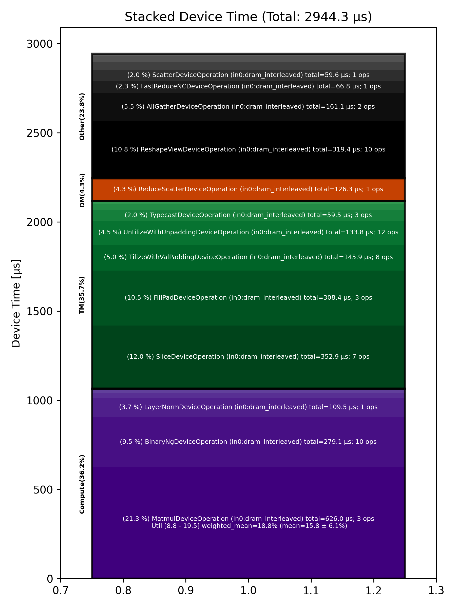

🚀 Performance Report 🚀 ======================== ID Total % Bound OP Code Device Device Time Op-to-Op Gap Cores DRAM DRAM % FLOPs FLOPs % Math Fidelity --------------------------------------------------------------------------------------------------------------------------------------------------------------------------- 6 0.7 % LayerNormDeviceOperation 3 109 μs 16 BF16, BF16 => BF16 43 1.0 % ReshapeViewDeviceOperation 29 29 μs 126 μs 72 BF16 => BF16 77 0.5 % UntilizeWithUnpaddingDeviceOperation 31 9 μs 63 μs 45 BF16 => BF16 123 1.1 % RepeatDeviceOperation 17 9 μs 171 μs 72 BF16 => BF16 147 1.7 % TilizeWithValPaddingDeviceOperation 21 39 μs 239 μs 45 BF16 => BF16 190 4.2 % DRAM MatmulDeviceOperation 32 x 2880 x 5760 17 358 μs 305 μs 60 191 GB/s 66.5 % 11.9 TFLOPs 19.2 % HiFi4 BF16 x BFP8 => BF16 196 0.1 % BinaryNgDeviceOperation 26 22 μs 1 μs 72 BF16, BF16 => BF16 231 0.2 % UntilizeWithUnpaddingDeviceOperation 2 32 μs 1 μs 60 BF16 => BF16 279 2.1 % SliceDeviceOperation 14 155 μs 185 μs 64 BF16 => BF16 296 0.8 % TilizeWithValPaddingDeviceOperation 1 39 μs 87 μs 45 BF16 => BF16 327 0.4 % UnaryDeviceOperation 2 9 μs 58 μs 72 BF16 => BF16 383 1.2 % BinaryNgDeviceOperation 10 15 μs 176 μs 72 BF16, BF16 => BF16 395 1.7 % UntilizeWithUnpaddingDeviceOperation 29 32 μs 238 μs 60 BF16 => BF16 437 2.4 % SliceDeviceOperation 23 155 μs 222 μs 64 BF16 => BF16 474 0.2 % TilizeWithValPaddingDeviceOperation 16 39 μs 1 μs 45 BF16 => BF16 503 0.5 % UnaryDeviceOperation 14 9 μs 70 μs 72 BF16 => BF16 522 0.7 % BinaryNgDeviceOperation 28 16 μs 98 μs 72 BF16, BF16 => BF16 574 1.0 % UnaryDeviceOperation 11 10 μs 142 μs 72 BF16 => BF16 598 1.7 % BinaryNgDeviceOperation 15 12 μs 264 μs 72 BF16, BF16 => BF16 635 1.7 % BinaryNgDeviceOperation 17 12 μs 254 μs 72 BF16, BF16 => BF16 659 4.5 % SLOW MatmulDeviceOperation 32 x 2880 x 2880 7 235 μs 481 μs 45 147 GB/s 51.2 % 9.0 TFLOPs 19.5 % HiFi4 BF16 x BFP8 => BF16 686 0.1 % BinaryNgDeviceOperation 7 11 μs 1 μs 72 BF16, BF16 => BF16 718 1.4 % ReshapeViewDeviceOperation 7 159 μs 65 μs 72 BF16 => BF16 741 1.0 % TypecastDeviceOperation 27 56 μs 98 μs 72 BF16 => FP32 772 0.6 % ReshapeViewDeviceOperation 26 47 μs 43 μs 72 FP32 => FP32 833 2.3 % SLOW MatmulDeviceOperation 32 x 2880 x 32 11 33 μs 326 μs 1 14 GB/s 4.9 % 0.2 TFLOPs 8.8 % HiFi2 FP32 x BFP8 => FP32 843 0.6 % TypecastDeviceOperation 29 2 μs 87 μs 1 FP32 => BF16 873 1.2 % FillPadDeviceOperation 0 3 μs 192 μs 1 BF16 => BF16 923 0.8 % PadDeviceOperation 17 35 μs 86 μs 2 BF16 => BF16 938 1.3 % FillPadDeviceOperation 28 4 μs 205 μs 1 BF16 => BF16 978 0.8 % TopKDeviceOperation 20 44 μs 90 μs 1 BF16 => BF16 1019 0.8 % SliceDeviceOperation 17 1 μs 132 μs 1 BF16 => BF16 1054 0.6 % SliceDeviceOperation 11 1 μs 89 μs 1 UINT16 => UINT16 1085 1.1 % TypecastDeviceOperation 19 2 μs 169 μs 1 UINT16 => INT32 1109 0.6 % ReshapeViewDeviceOperation 23 5 μs 91 μs 16 INT32 => INT32 1128 1.9 % UntilizeWithUnpaddingDeviceOperation 1 3 μs 302 μs 16 INT32 => INT32 1184 0.5 % UntilizeWithUnpaddingDeviceOperation 9 3 μs 83 μs 16 INT32 => INT32 1192 1.0 % PermuteDeviceOperation 1 3 μs 153 μs 16 INT32 => INT32 1242 0.5 % PermuteDeviceOperation 16 3 μs 80 μs 16 INT32 => INT32 1281 1.2 % ConcatDeviceOperation 8 2 μs 192 μs 32 INT32, INT32 => INT32 1303 1.6 % PermuteDeviceOperation 14 3 μs 253 μs 16 INT32 => INT32 1318 0.6 % TilizeWithValPaddingDeviceOperation 3 7 μs 89 μs 16 INT32 => INT32 1347 1.3 % SoftmaxDeviceOperation 25 24 μs 180 μs 72 BF16 => BF16 1393 3.8 % AllGatherDeviceOperation 0 52 μs 546 μs 24 INT32 => INT32 1410 1.6 % AllBroadcastDeviceOperation 8 36 μs 213 μs 4 BF16 => BF16 1453 0.7 % UntilizeWithUnpaddingDeviceOperation 31 7 μs 105 μs 1 BF16 => BF16 1475 1.0 % UntilizeWithUnpaddingDeviceOperation 25 7 μs 153 μs 1 BF16 => BF16 1534 0.5 % UntilizeWithUnpaddingDeviceOperation 11 7 μs 69 μs 1 BF16 => BF16 1538 1.2 % UntilizeWithUnpaddingDeviceOperation 24 7 μs 191 μs 1 BF16 => BF16 1591 0.5 % ConcatDeviceOperation 14 2 μs 83 μs 64 BF16, BF16 => BF16 1606 1.3 % TilizeWithValPaddingDeviceOperation 3 5 μs 196 μs 2 BF16 => BF16 1659 0.8 % ReshapeViewDeviceOperation 17 10 μs 120 μs 8 INT32 => INT32 1677 0.9 % SliceDeviceOperation 31 2 μs 145 μs 8 INT32 => INT32 1708 1.7 % UntilizeWithUnpaddingDeviceOperation 30 14 μs 249 μs 8 INT32 => INT32 1744 0.7 % SliceDeviceOperation 5 4 μs 109 μs 72 INT32 => INT32 1787 0.9 % TilizeWithValPaddingDeviceOperation 17 8 μs 132 μs 8 INT32 => INT32 1806 0.8 % BinaryNgDeviceOperation 7 11 μs 114 μs 72 INT32, INT32 => INT32 1842 0.6 % BinaryNgDeviceOperation 20 3 μs 96 μs 72 INT32, INT32 => INT32 1887 0.6 % ReshapeViewDeviceOperation 10 7 μs 93 μs 8 INT32 => INT32 1917 1.8 % ReshapeViewDeviceOperation 19 3 μs 283 μs 8 BF16 => BF16 1943 1.6 % UntilizeWithUnpaddingDeviceOperation 14 7 μs 250 μs 1 INT32 => INT32 1973 1.6 % UntilizeWithUnpaddingDeviceOperation 23 6 μs 241 μs 1 BF16 => BF16 1996 0.9 % ScatterDeviceOperation 30 60 μs 90 μs 1 BF16, INT32 => BF16 2019 0.8 % TilizeWithValPaddingDeviceOperation 25 5 μs 115 μs 64 BF16 => BF16 2073 1.6 % ReshapeViewDeviceOperation 12 23 μs 233 μs 2 BF16 => BF16 2083 1.5 % UntilizeDeviceOperation 25 4 μs 230 μs 2 BF16 => BF16 2134 3.2 % MeshPartitionDeviceOperation 24 2 μs 499 μs 16 BF16 => BF16 2165 2.8 % MeshPartitionDeviceOperation 29 2 μs 448 μs 16 BF16 => BF16 2183 0.7 % TilizeWithValPaddingDeviceOperation 2 4 μs 113 μs 1 BF16 => BF16 2226 1.2 % TransposeDeviceOperation 20 2 μs 181 μs 72 BF16 => BF16 2246 1.7 % ReshapeViewDeviceOperation 3 8 μs 255 μs 64 BF16 => BF16 2297 1.5 % BinaryNgDeviceOperation 12 129 μs 108 μs 72 BF16, BF16 => BF16 2318 2.2 % FillPadDeviceOperation 7 301 μs 41 μs 64 BF16 => BF16 2361 0.4 % FastReduceNCDeviceOperation 12 67 μs 1 μs 72 BF16 => BF16 2398 0.2 % SliceDeviceOperation 11 34 μs 1 μs 72 BF16 => BF16 2417 4.4 % ReduceScatterDeviceOperation 0 126 μs 574 μs 24 BF16 => BF16 2449 2.6 % AllGatherDeviceOperation 0 109 μs 304 μs 40 BF16 => BF16 2496 0.4 % BinaryNgDeviceOperation 9 48 μs 19 μs 72 BF16, BF16 => BF16 2498 1.0 % ReshapeViewDeviceOperation 24 29 μs 128 μs 72 BF16 => BF16 --------------------------------------------------------------------------------------------------------------------------------------------------------------------------- 100.0 % 79 device ops, 0 host ops, 0 signposts 2,944 μs 12,912 μs 📊 Stacked report 📊 ==================== Total % Op Code Device Time Sum Op Count Op Category Min FLOPs Max FLOPs Mean FLOPs Std FLOPs Weighted Mean FLOPs ------------------------------------------------------------------------------------------------------------------------------------------------------------------------------ 21.26 % MatmulDeviceOperation (in0:dram_interleaved) 626.01 μs 3 Compute 8.75 % 19.54 % 15.84 % 6.14 % 18.79 % 11.99 % SliceDeviceOperation (in0:dram_interleaved) 352.88 μs 7 TM 10.85 % ReshapeViewDeviceOperation (in0:dram_interleaved) 319.40 μs 10 Other 10.48 % FillPadDeviceOperation (in0:dram_interleaved) 308.44 μs 3 TM 9.48 % BinaryNgDeviceOperation (in0:dram_interleaved) 279.10 μs 10 Compute 5.47 % AllGatherDeviceOperation (in0:dram_interleaved) 161.12 μs 2 Other 4.95 % TilizeWithValPaddingDeviceOperation (in0:dram_interleaved) 145.86 μs 8 TM 4.54 % UntilizeWithUnpaddingDeviceOperation (in0:dram_interleaved) 133.80 μs 12 TM 4.29 % ReduceScatterDeviceOperation (in0:dram_interleaved) 126.34 μs 1 DM 3.72 % LayerNormDeviceOperation (in0:dram_interleaved) 109.48 μs 1 Compute 2.27 % FastReduceNCDeviceOperation (in0:dram_interleaved) 66.81 μs 1 Other 2.02 % ScatterDeviceOperation (in0:dram_interleaved) 59.59 μs 1 Other 2.02 % TypecastDeviceOperation (in0:dram_interleaved) 59.47 μs 3 TM 1.50 % TopKDeviceOperation (in0:dram_interleaved) 44.20 μs 1 Other 1.23 % AllBroadcastDeviceOperation (in0:dram_interleaved) 36.07 μs 1 Other 1.19 % PadDeviceOperation (in0:dram_interleaved) 35.00 μs 1 TM 0.94 % UnaryDeviceOperation (in0:dram_interleaved) 27.79 μs 3 Compute 0.80 % SoftmaxDeviceOperation (in0:dram_interleaved) 23.53 μs 1 Compute 0.31 % RepeatDeviceOperation (in0:dram_interleaved) 9.09 μs 1 Other 0.27 % PermuteDeviceOperation (in0:dram_interleaved) 7.92 μs 3 TM 0.13 % UntilizeDeviceOperation (in0:dram_interleaved) 3.87 μs 1 TM 0.12 % MeshPartitionDeviceOperation (in0:dram_interleaved) 3.48 μs 2 Other 0.11 % ConcatDeviceOperation (in0:dram_interleaved) 3.24 μs 2 TM 0.06 % TransposeDeviceOperation (in0:dram_interleaved) 1.82 μs 1 TM ------------------------------------------------------------------------------------------------------------------------------------------------------------------------------
